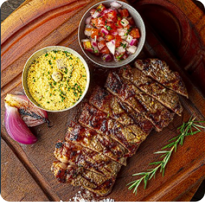

Festival do Torresmo
Chama na entrada
Barrinha de Cereal
Batata Frita
Batata Chips

Barrinha de Torresmo com limão e pimenta biquinho.
$49,00
Porção crocante de batata frita, dispensa qualquer apresentação.
R$16,99
Deliciosas batatas finas como você nunca experimentou!
Acompanha maionese de manjericão.
R$19,00
Porco com Goiaba
Frango Crocante
Linguiça levemente apimentada
Delicioso trio de torresmo com uma geleia de goiaba.
R$49,00
Deliciosos pedaços de peito de frango. Empanados com uma farinha Especial e temperada. Acompanha Maionese de alho
R$39,90

Linguicinha apimentada na medida 300g.
R$39,90
Costela Bovina
Cupim defumado com aligot
Brisket
Generosa porção de costela bovina que recebe um dry rub e com carinho defuma por 7 horas, completando um tempo de cocção de 14 horas. Acompanha fritas, vinagrete e farofa.
Serve de 2 a 3 pessoas.
R$169,90
Nosso cupim recebe um dry rub e um carinho especial na defumação, contemplando 14h de cocção. Finalizado com um aligot, chimichurri do chefe e pimenta biquinho.
Aprox 400g Serve 2 pessoas
Peito bovino defumado, tempo médio de cocção de aprox. 10 hrs. Finalizado com picles da casa. Assim fica facinho chegar desmanchando na sua mesa.
** 400g
Fire Pork
Porterhouse Angus
Picanha Angus

Um delicioso copa lombo desmanchando. Acompanha uma porção de fritas da casa, farofa, vinagrete e chimichurri defumado a mesa.
** 400g
R$139,90

Três texturas diferentes e suculentas em uma única peça retirado da traseira do boi. Acompanha porção individual de vinagrete e farofa artesanal da casa. tempo de preparação 25 minutos em media
** Serve de 2 a 3 pessoas

A picanha é aquele corte que dispensa apresentações, mega tradicional do churrasco brasileiro. Acompanha porção individual de vinagrete e farofa artesanal da casa
** Serve 1 pessoa ** 400g
Bife de Chorizo - aprox 250g
Fraldinha Angus com Aligot
Baby Beef

A carne de chorizo é extraída da parte dianteira do contrafilé bovino, vizinho do bife ancho e da alcatra. Acompanha porção individual de vinagrete e farofa artesanal da casa.** Serve 1 pessoa
R$ 79,90
A famosa fraldinha, também conhecida como bife de vazio, acompanha aligot.
** Serve 2 pessoas

Delicioso e macio baby beef 250gr. Acompanha vinagrete e farofa
Bife Ancho - aprox 250g
Salada du chef
Celeiro Salada

Corte extraído do lombo, da parte dianteira do contra filé, excelente grau de marmoreio. Acompanha porção individual de vinagrete e farofa artesanal da casa.
** Serve 1

Tomates,palmito e lascas de queijo. finalizados com chumichurri e ervas secas.

Alface, cebola roxa e manga. Acompanha molho do chefe com toques de laranja e mel.
Serve 2 pessoas
Aligot
Arroz caldoso de costela
Arroz do Celeiro
Delicioso purê de batata com muito queijo.

Quem resiste a um arroz feito com costel a defumada por mais de 14 horas ?Tempero especial da casa
Serve 2 pessoas

Arroz especial da casa, feito com linguiça, tomate, ovo e finalizado com a crocância da batata palha. E claro, aquele tempero do chefe.
** Serve 2 pessoas